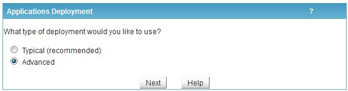
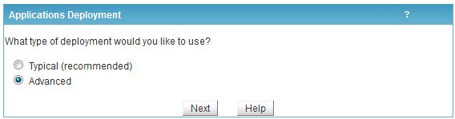
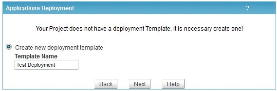
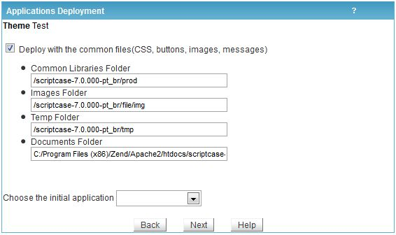
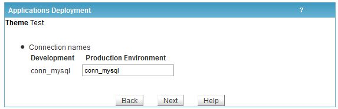

Step 2: Select the applications to deploy. It is possible to deploy the entire Project (the entire application set) or a partial set of Project applications.

Step 3: Select Advanced deployment.

Step 1: Access the ScriptCase menu item ProjectDeploy, according to image below.
Step 2: Select the applications to deploy. It is possible to deploy the entire Project (the entire application set) or a partial set of Project applications.
Step 3: Select Advanced deployment.

Step 4: Create a deployment template to save (and re-use) the defined configuration.

Step 5: Define the production environment directory structure according to the common libraries structure defined in the production server. Consider that environment directory root is prod_scriptcase. See a configuration example below.
*Note – The character "/", means the Server Web root, utilized in relative paths.
Production Directory - Relative path to prod (dir).
/prod_scriptcase/prod
Images Directory (used for upload) - Relative path to img.
/prod_scriptcase/file/img
Temporary Directory- Relative path to tmp.
/prod_scriptcase/tmp
Documents Directory (used for upload) - Absolute path (full path) to doc.
C:/Apache/Apache2/htdocs/prod_scriptcase/file/doc

Step 6: Name the connections used for Production.

Step 7: Select used Deployment Output. ScriptCase offers the following options:
1 - Generate ZIP with applications (recommended): Upon complete the process is displayed a download link to the deployment package.

2 – Deploy in Server directory: Deploy the applications in selected directory. This option should only be used case the deployment is in the same ScriptCase server.

3 – Deploy in FTP server: Deploy the applications automatically in FTP remote server.

Step 8: Upon complete the process is displayed an application deployed report.

Step 9: The common libraries are methods required by the applications in the production environment being required by the deployment package.
Note: In case of re-deployment (deploying again same project applications) it is not necessary to download common library again. This info is not valid when the common libraries are update in another ScriptCase release.